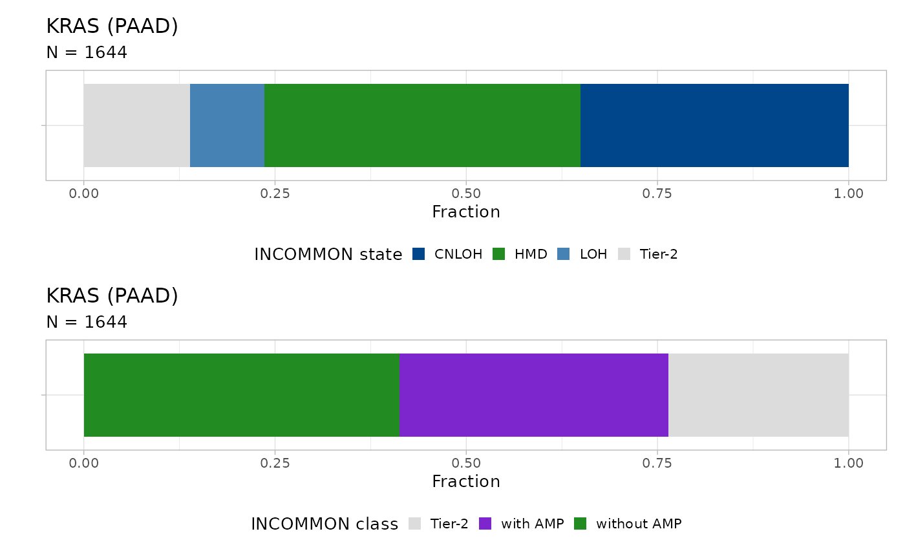

4. Survival analysis of MSK-MetTropism
Source:vignettes/a4_survival_analysis.Rmd
a4_survival_analysis.Rmd
library(INCOMMON)
#> Warning: replacing previous import 'cli::num_ansi_colors' by
#> 'crayon::num_ansi_colors' when loading 'INCOMMON'
library(dplyr)
#>
#> Attaching package: 'dplyr'
#> The following objects are masked from 'package:stats':
#>
#> filter, lag
#> The following objects are masked from 'package:base':
#>
#> intersect, setdiff, setequal, unionIn this vignette we carry out survival analysis based on INCOMMON classification of samples of pancreatic adenocarcinoma (PAAD) patients from the MSK-MetTropsim cohort.
4.1 Classification of 1740 prostate adenocarcinoma samples
In order to stratify patients based on the INCOMMON interpreted genomes, we first need to classify all the mutations in these samples.
4.1.1 Input intialisation
First we prepare the input using function init:
data(MSK_genomic_data)
data(MSK_clinical_data)
data(cancer_gene_census)
x = init(
genomic_data = MSK_genomic_data,
clinical_data = MSK_clinical_data %>% filter(tumor_type == 'PAAD'),
gene_roles = cancer_gene_census
)
#> ── INCOMMON - Inference of copy number and mutation multiplicity in oncology ───
#>
#> ── Genomic data ──
#>
#> ✔ Found 25659 samples, with 224939 mutations in 491 genes
#> ! No read counts found for 1393 mutations in 1393 samples
#> ! Gene name not provided for 1393 mutations
#> ! 201 genes could not be assigned a role (TSG or oncogene)
#>
#> ── Clinical data ──
#>
#> ℹ Provided clinical features:
#> ✔ sample (required for classification)
#> ✔ purity (required for classification)
#> ✔ tumor_type
#> ✔ OS_MONTHS
#> ✔ OS_STATUS
#> ✔ SAMPLE_TYPE
#> ✔ MET_COUNT
#> ✔ METASTATIC_SITE
#> ✔ MET_SITE_COUNT
#> ✔ PRIMARY_SITE
#> ✔ SUBTYPE_ABBREVIATION
#> ✔ GENE_PANEL
#> ✔ TMB_NONSYNONYMOUS
#> ✔ FGA
#> ✔ AGE_AT_DEATH
#> ✔ Found 1742 matching samples
#> ✖ Found 23917 unmatched samples
print(x)
#> ── [ INCOMMON ] 6779 PASS mutations across 1740 samples, with 276 mutant genes
#> ℹ Average sample purity: 0.26
#> ℹ Average sequencing depth: 623
#> # A tibble: 6,779 × 25
#> sample tumor_type purity chr from to ref alt DP NV VAF
#> <chr> <chr> <dbl> <chr> <dbl> <dbl> <chr> <chr> <int> <int> <dbl>
#> 1 P-00094… PAAD 0.1 chr12 2.54e7 2.54e7 C T 847 82 0.0968
#> 2 P-00094… PAAD 0.1 chr17 7.58e6 7.58e6 C T 709 91 0.128
#> 3 P-00215… PAAD 0.4 chr12 2.54e7 2.54e7 C T 1048 322 0.307
#> 4 P-00215… PAAD 0.4 chr17 7.57e6 7.57e6 G A 942 384 0.408
#> 5 P-00215… PAAD 0.4 chr1 2.71e7 2.71e7 - G 833 289 0.347
#> 6 P-00215… PAAD 0.4 chr1 1.13e7 1.13e7 T C 1115 300 0.269
#> 7 P-00215… PAAD 0.4 chr3 1.87e8 1.87e8 G A 1362 847 0.622
#> 8 P-00034… PAAD 0.2 chr12 2.54e7 2.54e7 C T 533 56 0.105
#> 9 P-00034… PAAD 0.2 chr17 7.58e6 7.58e6 C A 351 56 0.160
#> 10 P-00245… PAAD 0.2 chr12 2.54e7 2.54e7 C G 938 155 0.165
#> # ℹ 6,769 more rows
#> # ℹ 14 more variables: gene <chr>, gene_role <chr>, OS_MONTHS <dbl>,
#> # OS_STATUS <dbl>, SAMPLE_TYPE <chr>, MET_COUNT <dbl>, METASTATIC_SITE <chr>,
#> # MET_SITE_COUNT <dbl>, PRIMARY_SITE <chr>, SUBTYPE_ABBREVIATION <chr>,
#> # GENE_PANEL <chr>, TMB_NONSYNONYMOUS <dbl>, FGA <dbl>, AGE_AT_DEATH <dbl>There are 6779 mutations with average sequencing depth 623 across 1740 samples with average purity 0.26.
4.1.2 Classification
We then classify the mutations using PCAWG priors and the default entropy cutoff and overdispersion parameter:
x = classify(
x = x,
priors = INCOMMON::pcawg_priors,
entropy_cutoff = 0.2,
rho = 0.01,
parallel = TRUE,
num_cores = 8
)
print(x)
#> ── [ INCOMMON ] 6779 PASS mutations across 1740 samples, with 276 mutant genes
#> ℹ Average sample purity: 0.26
#> ℹ Average sequencing depth: 623
#> ── [ INCOMMON ] Classified mutations with overdispersion parameter 0.01 and ent
#> ℹ There are:
#> • N = 2611 mutations (HMD)
#> • N = 558 mutations (LOH)
#> • N = 1988 mutations (CNLOH)
#> • N = 283 mutations (AM)
#> • N = 1339 mutations (Tier-2)
#> # A tibble: 6,779 × 18
#> sample tumor_type purity chr from to ref alt DP NV VAF
#> <chr> <chr> <dbl> <chr> <dbl> <dbl> <chr> <chr> <int> <int> <dbl>
#> 1 P-00094… PAAD 0.1 chr12 2.54e7 2.54e7 C T 847 82 0.0968
#> 2 P-00094… PAAD 0.1 chr17 7.58e6 7.58e6 C T 709 91 0.128
#> 3 P-00215… PAAD 0.4 chr12 2.54e7 2.54e7 C T 1048 322 0.307
#> 4 P-00215… PAAD 0.4 chr17 7.57e6 7.57e6 G A 942 384 0.408
#> 5 P-00215… PAAD 0.4 chr1 2.71e7 2.71e7 - G 833 289 0.347
#> 6 P-00215… PAAD 0.4 chr1 1.13e7 1.13e7 T C 1115 300 0.269
#> 7 P-00215… PAAD 0.4 chr3 1.87e8 1.87e8 G A 1362 847 0.622
#> 8 P-00034… PAAD 0.2 chr12 2.54e7 2.54e7 C T 533 56 0.105
#> 9 P-00034… PAAD 0.2 chr17 7.58e6 7.58e6 C A 351 56 0.160
#> 10 P-00245… PAAD 0.2 chr12 2.54e7 2.54e7 C G 938 155 0.165
#> # ℹ 6,769 more rows
#> # ℹ 7 more variables: gene <chr>, gene_role <chr>, id <chr>, label <chr>,
#> # state <chr>, posterior <dbl>, entropy <dbl>There are 2611 heterozygous diploid mutations (HMD), 558 mutations with loss of heterozygosity (LOH), 1988 mutations with copy-neutral LOH (CNLOH), 283 mutations with amplification. In addition, 1339 mutations were classified as Tier-2, either because of entropy being larger than cutoff or because of a low number of mutant alleles relative to the wild-type.
4.2 Survival analysis of Mutant KRAS patients
In order to obtain a grouping of patients based on the mutational status of KRAS, we need first to annotate the genotype of each sample and interpret mutant KRAS genomes.
4.2.1 Genome Interpretation
We use the function genome_interpreter to add INCOMMON
classes (Mutant with/without LOH, Mutant with/without AMP, Tier-2)
class and annotate each sample with a genotype
summarising all the interpreted mutations found in the sample.
x = genome_interpreter(x = x)
#> ℹ There are 1288 different genotypes
#> ℹ The most abundant genotypes are:
#> • Mutant KRAS without AMP,Mutant TP53 without LOH (59 Samples, Frequency 0.03)
#> • Mutant KRAS with AMP,Mutant TP53 with LOH (53 Samples, Frequency 0.03)
#> • Mutant KRAS without AMP (44 Samples, Frequency 0.03)Across the PAAD samples that we classified, there are 1288 different genotypes, the most abundant ones being different combinations of TP53 with/without LOH and KRAS mutations with/without amplifications.
We investigate the impact on survival of the Mutant KRAS with/without amplification genomes with respect to KRAS WT patients.
We first look at the distribution of INCOMMON copy number states
across PAAD samples for KRAS, using function
plot_class_fraction:
plot_class_fraction(x = x, tumor_type = 'PAAD', gene = 'KRAS')
#> ✔ Loading CNAqc, 'Copy Number Alteration quality check'. Support : <https://caravagn.github.io/CNAqc/>
#> ℹ The frequency of states CNLOH, HMD, LOH, and Tier-2 are 0.35, 0.38, 0.1, and 0.17
Across 1644 samples, a large fraction of KRAS mutations (35%) is associated with amplification of the mutant allele, always through CNLOH (amplification in diploid state). A slightly higher number (38%) of mutant KRAS samples is without amplification, whereas 26% of the samples has a Tier-2 KRAS mutation.
4.2.2 Kaplan-Meier survival esitmates
Next we use function kaplan_meier_fit to fit survival
data (overall survival status versus overall survival months in this
case) using the Kaplan-Meier estimator.
x = kaplan_meier_fit(x = x, tumor_type = 'PAAD', gene = 'KRAS')
#> Call: survfit(formula = survival::Surv(OS_MONTHS, OS_STATUS) ~ group,
#> data = data)
#>
#> n events median 0.95LCL 0.95UCL
#> KRAS WT 109 63 21.5 18.86 30.8
#> Mutant KRAS without AMP 626 391 18.1 15.84 20.7
#> Mutant KRAS with AMP 573 394 11.7 9.69 13.2The median overall survival time decreases from 21.5 months for the KRAS WT group to 18.2 months for Mutant KRAS without amplification and further to 11.7 months for Mutant KRAS with amplification patients.
4.2.3 Hazard Ratio estimates with Cox regression
In order to estimate the hazard ratio associated with these groups, we fit the same survival data, this time using a multivariate Cox proportional hazards regression model. Here, we include the age of patients at death, sex and tumor mutational burden as model covariates.
x = cox_fit(x = x,
tumor_type = 'PAAD',
gene = 'KRAS',
survival_time = 'OS_MONTHS',
survival_status = 'OS_STATUS',
covariates = c('age', 'sex', 'tmb'))
#> Call:
#> survival::coxph(formula = formula %>% stats::as.formula(), data = data %>%
#> as.data.frame())
#>
#> coef exp(coef) se(coef) z p
#> groupMutant KRAS with AMP 0.34419 1.41085 0.13798 2.495 0.0126
#> groupMutant KRAS without AMP 0.03665 1.03733 0.13762 0.266 0.7900
#> AGE_AT_DEATH>67 -0.12559 0.88197 0.07054 -1.781 0.0750
#> TMB_NONSYNONYMOUS>4 0.14600 1.15719 0.07035 2.075 0.0380
#>
#> Likelihood ratio test=28.06 on 4 df, p=1.214e-05
#> n= 838, number of events= 838
#> (470 observations deleted due to missingness)This analysis reveals that, whereas KRAS mutation alone (without amplification) is not enough, the presence of amplification significantly increases the hazard ratio (HR = 1.41, p-value = 0.012) with respect to the WT group. Moreover, tumor mutational burden (TMB_NONSYNONYMOUS) also gives a significant albeit weak contribution, as patients with more than 4 non-synonymous mutations (median TMB_NONSYNONYMOUS) emerge as being more at risk (HR = 1.16, p-value = 0.038).
4.2.4 Visualising survival analysis
Kaplan-Meier estimation and multivariate Cox regression can be
visualized straightforwardly using the
plot_survival_analysis function:
plot_survival_analysis(x = x,
tumor_type = 'PAAD',
gene = 'KRAS')The plot displays Kaplan-Meier survival curves and risk table, and a forest plot for Cox multivariate regression coefficients, highlighting in red the covariates that have a statistically significant contribution to differences in hazard risks.